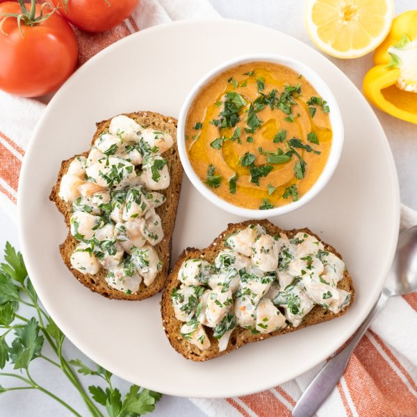

Gazpacho (Chilled Veggie Soup) with Lemon-Parsley Shrimp Salad Toasts

Total Time
30 min
Nutrition (per serving)
673.7 kcalCalories
37.2 gProtein
49.6 gCarbs
37.3 gFat
Full nutrition table
| Calories | 673.7 kcal |
| Total fat | 37.3 g |
| Saturated fat | 6 g |
| Trans fat | 0.2 g |
| Cholesterol | 228 mg |
| Sodium | 1410.6 mg |
| Carbohydrates | 49.6 g |
| Fiber | 8.3 g |
| Sugars | 10.5 g |
| Protein | 37.2 g |
| Potassium | 1030.1 mg |
| Calcium | 283.4 mg |
| Iron | 4.4 mg |
| Vitamin A | 1530.2 IU |
| Vitamin C | 99.6 mg |
| Vitamin D | 6.2 IU |
Cookware
Ingredients
- 1 tbspcapers
- 8 fl ozchicken or vegetable broth
- 1English cucumber
- 2 clovesgarlic
- 1 small bunchItalian (flat-leaf) parsley
- 1lemon
- 1 ½ lbraw peeled shrimp, fresh or frozen
- 4tomatoes
- 10 sliceswhole grain bread
- 1yellow bell pepper
- black pepper
- crushed red pepper
- extra virgin olive oil
- mayonnaise
- onion powder
- red wine vinegar
- salt
Steps
- Wash and dry the fresh produce.1 English cucumber
1 yellow bell pepper
4 tomatoes
1 lemon
1 small bunch Italian (flat-leaf) parsley - If using frozen shrimp, place them in a colander and run under cold water to thaw them slightly and remove any ice crystals. (If using fresh shrimp, skip this step.) Place the shrimp on a clean towel or paper towels and pat dry. Set aside.1 ½ lb raw peeled shrimp, fresh or frozen
- Medium dice bread and transfer to a large bowl.2 slices whole grain bread
- Peel, trim, and large dice cucumber; add to the bowl with the bread.
- Trim, seed, and large dice bell pepper. Large dice tomatoes; add both to the bowl.
- Peel and roughly chop garlic; add to the bowl along with broth, oil, vinegar, and spices; stir to combine the soup mixture.2 cloves garlic
8 fl oz (1 cup) chicken or vegetable broth
3 tbsp extra virgin olive oil
2 tbsp red wine vinegar
1 tsp onion powder
1 tsp salt
½ tsp black pepper - Working in batches, transfer the soup mixture to a blender; blend on high until semi-smooth. Once blended, transfer gazpacho to a container with a lid and refrigerate until ready to serve. (Reserve bowl for later use.)
- Preheat oven to broil on high and position rack about 6-inches from the top.
- Transfer shrimp to a large baking sheet pan lined with aluminum foil; drizzle with oil and season with salt and pepper. Place baking sheet in the oven and broil, flipping once, until shrimp are opaque and cooked through, 3-4 minutes. Remove from oven.2 tsp extra virgin olive oil
¼ tsp salt
¼ tsp black pepper - While the shrimp are cooking, mince capers. Place in the reserved bowl along with mayo and crushed red pepper.1 tbsp capers
⅓ cup mayonnaise
¼ tsp crushed red pepper - Juice lemon into the bowl with the capers and stir to combine.
- Shave parsley leaves off the stems; discard stems and mince the leaves. Add to the bowl (reserving a small handful for serving).
- Carefully remove cooked shrimp from the baking sheet by lifting the corners of the foil and transferring the foil sheet to a flat surface. Arrange additional bread slices on the baking sheet, place in the oven, and broil until toasted, 1-2 minutes. Remove from oven.8 slices whole grain bread
- Meanwhile, roughly chop the cooked shrimp; add to the bowl with the lemon-mayo mixture and stir to combine. Divide shrimp salad between toast slices and spread out in an even layer.
- Divide gazpacho between bowls; drizzle with additional oil and sprinkle with reserved parsley. Serve with shrimp salad toasts on the side and enjoy!2 tsp extra virgin olive oil